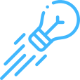

Seleção de projetos
O que é? Projetos com base científica e potencial de aplicação são selecionados para participar do programa.
Benefício direto: seleção das deeptechs com base de aderência ao mercado.
Tecnologias desenvolvidas por pesquisadores, prontas para gerar valor no mercado. O Programa INOVA aproxima ciência e empresas para transformar conhecimento em oportunidade.
Acesse projetos com potencial real de aplicação
Conectando pesquisa, propriedade intelectual e oportunidades de mercado.
Lançado em 2021, o Programa de Propriedade Intelectual com Foco no Mercado (INOVA) é uma iniciativa da Agência de Desenvolvimento Regional Sustentável (Ageuni), realizada em parceria entre a Secretaria da Ciência, Tecnologia e Ensino Superior (SETI) e a Fundação Araucária, com apoio da Rede Empreende/PR.
O programa tem como objetivo transformar resultados de pesquisas acadêmicas com potencial mercadológico em produtos, serviços e novos negócios, apoiando pesquisadores no desenvolvimento de soluções inovadoras e fortalecendo a cultura empreendedora e a propriedade intelectual no Paraná.
O INOVA é estruturado em três etapas, que acompanham os pesquisadores desde a capacitação inicial até a aproximação com o mercado.
Na primeira fase, os participantes têm acesso a capacitações, mentorias coletivas e uma banca de seleção dos projetos com maior potencial de desenvolvimento. A segunda etapa é voltada aos projetos com patente de invenção depositada ou concedida pelo INPI, oferecendo mentorias, consultorias e preparação para novos desafios. Na etapa final, os projetos selecionados avançam com apoio especializado e conexão com empresas parceiras para potencializar sua aplicação no mercado.
O que você encontra no INOVA:
Tecnologias com base científica e potencial de mercado
Apoio na estruturação e validação das soluções
Conexão com empresas e parceiros estratégicos
Visibilidade para projetos inovadores
Para quem é:
Da pesquisa ao mercado, em etapas estruturadas.
O programa acompanha a evolução das tecnologias, apoiando desde o desenvolvimento até a conexão com o mercado.
O que é? Projetos com base científica e potencial de aplicação são selecionados para participar do programa.
Benefício direto: seleção das deeptechs com base de aderência ao mercado.
O que é? As tecnologias passam por aprimoramento, testes e organização para aplicação prática.
Benefício direto: fortalecimento da proposta de valor da solução.
O que é? Os projetos são preparados para se relacionar com empresas e possíveis parceiros.
Benefício direto: aproximação com oportunidades reais de negócio.
O que é? Espaço onde os projetos são apresentados para o mercado.
Benefício direto: visibilidade e geração de conexões estratégicas.
Tecnologias prontas para gerar oportunidades.
A Vitrine Tecnológica do INOVA reúne projetos desenvolvidos por pesquisadores em diferentes áreas, com potencial de aplicação no mercado. Aqui, empresas podem conhecer soluções inovadoras, entender suas aplicações e entrar em contato diretamente com os responsáveis pelos projetos.
O que você encontra na vitrine:
Mais do que pesquisa, soluções com potencial real de aplicação.

Acesso à inovação: descubra tecnologias desenvolvidas a partir de pesquisa científica
Conexão direta: fale com os pesquisadores responsáveis pelas soluções
Novas oportunidades: encontre caminhos para parcerias e desenvolvimento conjunto
Aplicação prática: soluções com potencial para diferentes setores do mercado
Quem desenvolve tecnologia precisa de conexão. Quem busca inovação precisa de acesso.
O INOVA atua como um elo entre o conhecimento científico e as demandas do mercado, facilitando a transformação de pesquisas em soluções aplicáveis. Ao centralizar essas tecnologias em um ambiente estruturado, o programa amplia a visibilidade dos projetos e fortalece a conexão com empresas interessadas em inovar.
Uma trajetória de inovação em evolução.
O INOVA já apoiou diversas tecnologias ao longo dos anos. Agora, você pode explorar os projetos por edição e acompanhar a evolução das soluções desenvolvidas.
Conecte-se com a inovação
Seu próximo projeto pode começar aqui.
Explore as tecnologias do INOVA e encontre soluções alinhadas às necessidades da sua empresa.
Acessar a vitrine tecnológica